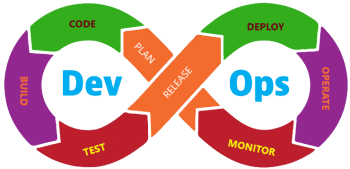

Developing a Data Platform
Data analysis can provide rich insights for an organisation; however, the real value is only realised once these tools are made available to a wider user community. It is estimated that only around 10% of machine learning models developed actually make it into production, and hence the real value is never realised. The two main problems preventing wider adoption of analytical solutions are:
- Unreliable source data - While manual collection and bespoke data preparation can support isolated analysis, a more robust data pipeline is required to allow an application to scale. It is therefore essential to develop robust and validated data repositories to secure the data capture and preparation process for their longer-term success.
- Accessibility – If the developed solutions are not accessible or intuitive to prospective users their true value will never be realised. Furthermore, when providing services directly to your customers, it is essential that the look and feel of the application match the company values you wish to portray.
Web Applications provide the perfect solution to both these issues but it is essential that they satisfy the 5 core requirements in order to be successful.
- Affordability - By using open-source tools we ensure the developed solutions avoid expensive licence fees that become a burden to your business in years to come
- Maintainability - Ensuring the code is well documented and written using popular, well supported languages, ensures applications can easily be updated and maintained
- Scalability - While you will want to start small it is essential that the developed solutions can grow to support your longer-term aspirations
- Usability - To encourage active use of the application the user interface (UI) must be intuitive, engaging and provide the necessary data validation to ensure the information captured supports your wider analytical requirements.
- Security - It is essential that the application stores data securely and provide robust access and permission management
On this page we discuss the tools and approach used by EMPEDATA to develop effective solutions that satisfy all of the above criteria. As with our analytics page, we also provide a project portfolio to show case solutions we have built and a skills page with links to a range of books, tutorials and articles to further your understanding. The topics covered in the sections below are:
- Designing an application – An overview of web application architecture and development tools
- Effective development - A brief overview of software development best practice
- Structuring your data – An understanding of how to store data and different types of database available
- Choosing a hosting environment – Options for delivering your application to a wider community
Designing a solution

Web Apps can provide the required functionality and secure data access to a variety of users, both internal and external to the organisation through their web browser. The ability to avoid having to install specialist software on people's devices, allowing updates to be easily deployed and centralising the data store make Web Apps the ideal solution for most data platform applications.
For simple analytical applications the Streamlit library enables web apps to be created entirely using Python code without the need for separate front end web development making them ideal for sharing analytical models across an internal team.
However, for the majority of applications it will be necessary to develop a user interface using a combination of HTML, CSS and JavaScript. A Model View Controller (MVC) architecture, provide separation of concerns between three elements provides an appropriate balance between complexity and control:
- Model - The backend that contains all the data logic.
- View – The frontend or graphical user interface (GUI).
- Controller – The brains of the application that controls how data is displayed.
Our preferred web development framework is Django for the development of server-side applications in Python, which has the benefit of easily integrate existing analytical / machine learning models. Django also provides a host of other built-in advanced functionality such as admin panels, file upload support, authentication, comment boxes, contact forms and app management which help to significantly reduce the time and effort in building robust web applications.
In some circumstances if can be beneficial to separate the UI and data processing and storage element of the application using an Application Programming Interfaces (API's). APIs allow a programme to be broken into distinct services that communicates with other services introducing a proper separation of concerns and allowing the different areas of the code to be developed in parallel with minimal risk of unintended consequences so long as the interfaces between services are maintained. To support this approach Django also provides a versatile toolkit for constructing web APIs
For development of single page web applications that get and set data via requests to the Django backend React is a popular choice. React is a JavaScript frontend (client-side) framework developed by Facebook and comes with multiple component libraries, add-on packages and template to save developers a lot of time and is capable of producing engaging and intuitive user interfaces.
Effective Development
Equally as important as the applications construction are the processes used to build and deploy the service. In the last 10 years DevOps has established itself as the software industry best practice way of working, combining cultural philosophies, practices, and tools to develop and evolve applications faster and more reliably.
At its heart DevOps is about creating flow between the various process stages, represented by a figure of eight. Through improving communication and feedback, identify issues early and automating processes where possible to provide the team the best possible chance of success.
We outline a few key concepts that should be understood, however for a more comprehensive account of DevOps practices refer to The DevOps Handbook.
- Agile – When operating with a high degree of uncertainty traditional project management techniques don’t work. Agile, as defined in more detail in the book Scrum The Art of Doing Twice The Work In Half the Time, is an approach to project management in which small 2-3 week sprints of activity are planned, each of which delivers demonstrable capability.
- Minimum Viable Product (MVP) - When developing a new application, we need produce something with just enough features to encourage users to adopt the solution. These users then support the iterative development of the application testing enhancements and enabling the developers to learn from the feedback received.
- Version control systems - Systems such as Git provide a means of storing, sharing and tracking changes to source code in a special kind of database. This repository is an invaluable source of that needs to be protected from both catastrophic events and the casual degradation of human error and unintended consequences.
- Code Formatting While the software your code communicates with doesn’t care how the code looks, other developers who may have to work on it in the future certainly do. When everyone is writing code that looks the same, your brain can relax a bit as the understanding comes faster. Using opinionated formatting tools can enforce rules automatically to simplify the process of writing well structured code.
- Testing - is fundamental to ensure good quality code is being written and allows changes to be quickly validated. The main types of testing used are:
- Unit Testing - refers to taking a component of a program and testing it in isolation these tests can then be automated to validate changes, test dependencies and handling of edge cases.
- Functional Testing - checks the compliance of the system overall against a defined set of criteria. In other words, does the software as a whole do what it’s supposed to do?
- Regression Testing - running previously written tests whenever a new change is introduced to the code allowing you to remain confident that your code continues to function as expected as it grows in complexity and capability.
- Continuous integration – is a software development practice where developers regularly merge their code changes into a central repository, after which automated tests validate the code quality. A robust approach that ensures good test coverage enables bugs to be found quicker, improve software quality, and reduce the time it takes to validate and release new software updates.
- MLOPS– Extends the concept of DevOps to machine learning models where integration not only covers testing and validating code but is now extended to test and validate the data in the system including the retraining and serving of models as required.
Structuring your data
The objective of a good data architecture is to ensure that all the information requires running your business is accurate, consistent and accessible. The first step in this process is often ensure that key information is stored centrally instead of distributed across a variety of personal computers and drives, known as a Data Lake. By creating this Data Lake, storing raw data, of various formats, in its native form in one common location.
Having created a Data Lake, it will invariably become apparent that different versions of the same data exist, that contradict each other and that that significant work is still required to prepare the data into a format suitable for analysis. A Data Warehouse merges information from these different sources and consolidates them through an extract, transform and load (ETL) process, into a comprehensive database. At a very high level, the ETL process extracts the data from multiple sources, transforms it into a cleaned format, which can then be used for business processes. When data is loaded into the Data Warehouse, it is modelled and structured, ready for a specific purpose.
The problem arises, as new unstructured data needs to be ingested into the Data Warehouse, which can become impossible to control. The solution is to build an application, aligned to core business processes and customer services, to collect and validate the data at the point of entry This data is then stored in a dedicated database, known as a Data Mart. which form part of the wider Data Warehouse. Depending on the data requirements of the application the Data Mart can be considered as either:
- Independent - Created by drawing from operational or external data sources normally used to capture business or customer data that would otherwise reside with individuals and be inaccessible to the wider organisation.
- Hybrid - combines input from a Data Warehouse, operational systems and external systems
- Dependent - built by drawing data from the existing central warehouse generally used for isolated security and solo performance.
Ultimately, the data being collected needs to be stored in a database; however, there are a variety of database types to choose from, each with their own strengths and limitations.
- Relational databases are the go-to solution, providing a strict structure / schema, ensuring the data contains a predefined list of components, easily accessible and significantly reduces the chance of errors.
- Non-relational database organization are more forgiving in their structure. Instead of tables with columns and rows, they have collections of different categories allowing records of varying shape to be stored.
- Graph databases are a relatively new form of database that capture both the entities and relationships between different data points. These databases rose to prominence with the growth of network analytics, as used extensively by Facebook and Google.
In terms of selecting a database to use we again look to satisfy the success criteria as originally outlined. Our recommendation for nearly all applications is to use PostgreSQL which provides a highly capable database that supports a wide variety of data types, it provides integrity controls to prevent invalid or orphan records and powerful indexing methods to optimise performance. Advanced features such as full-text search speed up finding information and the ability to store non-relational data such as JSON and XML formats enable PostgreSQL to satisfy the demands of traditional NoSQL requirements providing the flexibility to meet the evolving requirements of your applications and minimising the administration burden. For specific applications that would benefit for a offers an effective Graph database solution our recommendation is Neo4J both of which can be easily integrated into your Django applications and form part of your wider Data Warehouse capability.
Choosing a Hosting Environment
There are fundamentally two types of hosting arrangement available.
Statically hosting - enables web pages serve up the same page to HTML, CSS and JavaScript to all users who enter the site, in reality this is nothing more than a file store. As no processing is required on the server these pages are generally faster and can be hosted at minimal, or no, cost using a variety of service providers including our favourite GitHub Pages.
Dynamic hosting - enables the processing of content and storage of data on the server. Dynamic hosting can be provided on any corporate network or by a cloud service provider. If you already have an IT team capable of setting up, configure and managing servers this option provides the greatest flexibility.
An alternative solution is to opt for a PaaS (platform as a service) offering a more managed, low configuration services, making it incredibly easy to get up and running and provide total upfront transparency of the costs. Our favoured solution is to use Heroku, which comes with the added benefit of providing a “Free Tier” which, while there are significant constraints in terms of speed and storage capacity, provides an ideal sandpit environment in which to demonstrate capability without commitment.
Project Portfolio